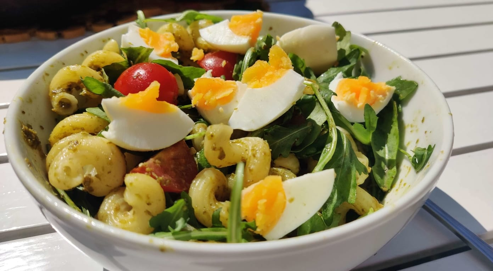
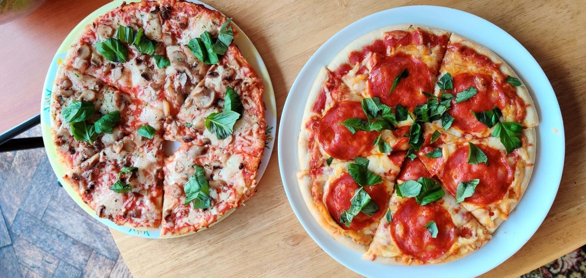
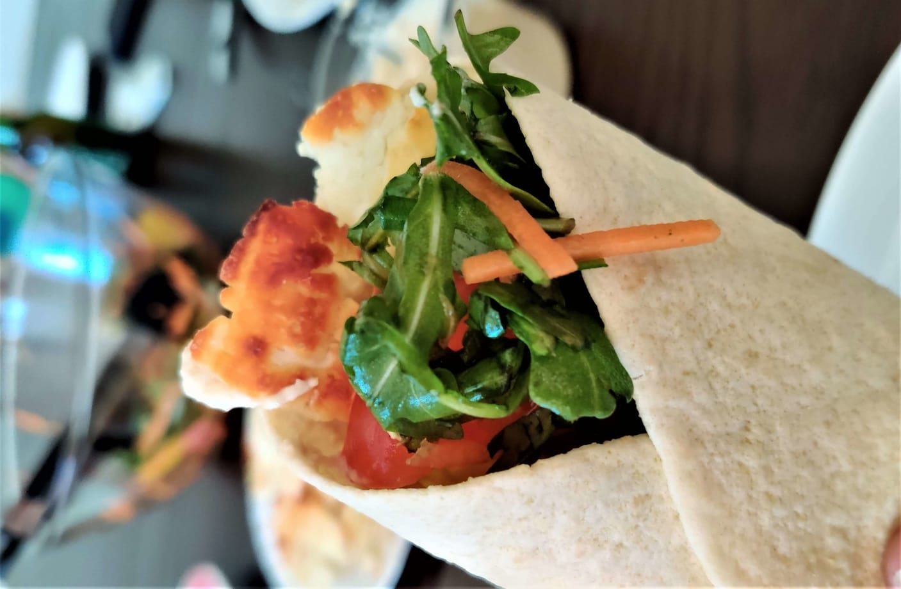

Let's Get Cooking
One of my goals this quarantine has been to learn how to be a better cook, so here are my favourite dishes I have discovered during lockdown.

Pasta Salad
This is a simple, delicious, and pretty meal - what more do you want?
Ingredients
For 2 servings:
- 200g pasta of choice
- 2 eggs
- 30g rocket
- 120g cherry tomatoes
- 4tbsp green pesto
Instructions
- Boil the pasta and eggs.
- Eggs for minimum 8 minutes.
- Pasta for time stated on packet.
- Whilst boiling, cut the cherry tomatoes in half.
- Drain the pasta, and mix with pesto, rocket, and tomatoes.
- Peal the egg, cut into segments, and place on top.

Homemade Pizza
Who doesn't love a tasty pizza?
Ingredients
The base:
- 300g bread flour
- 1 tsp yeast
- 1/2 tsp salt
- 1tbsp olive oil
- 100ml warm water
The sauce:
- 100g tomato passata
- Fresh basil
- 1 crushed garlic clove
For Toppings:
- 150g mozzarella
- 1tbsp parmesan
- 60g halved cherry tomatoes
- Some more fresh basil
Instructions
- Heat oven to 240C, or 220 for fan ovens
- Make the dough
- Stir the flour, salt and yeast into a bowl
- Pour in the olive oil and warm water
- Knead the dough for 5 minutes, then place to side covered in a tea towel
- For the sauce, mix all the sauce ingredients together
- Roll the dough out thin to ~25cm across
- Spread sauce over the bases, and scatter the cheese and cherry tomatoes
- Bake for 8-10 mins, until the bases are crispy
- Sprinkle on the basil, and serve

Halloumi Wrap
A quick vegetarian wrap anyone can make!
Ingredients
For each wrap:
- 1 wrap
- 15g rocket
- 100g halloumi, sliced
- 1 tomato, sliced
- 1/3 carrot, julienned
- tbsp hummus
Instructions
- Grill the halloumi for 5 minutes per side, or until golden brown
- Spread the hummus across the central diameter of the wrap
- Place the halloumi, rocket tomato, and carrot on the hummus
- Fold wrap at the bottom, then the sides of the wrap to encase the filling